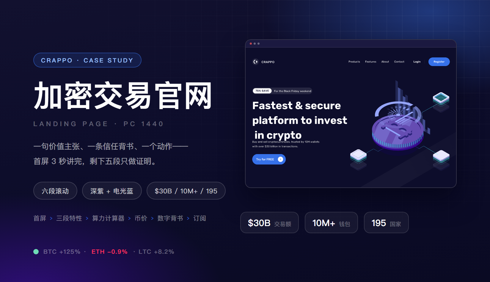
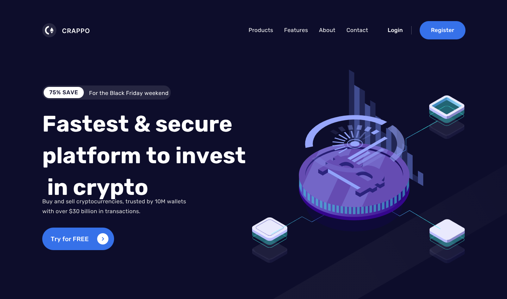
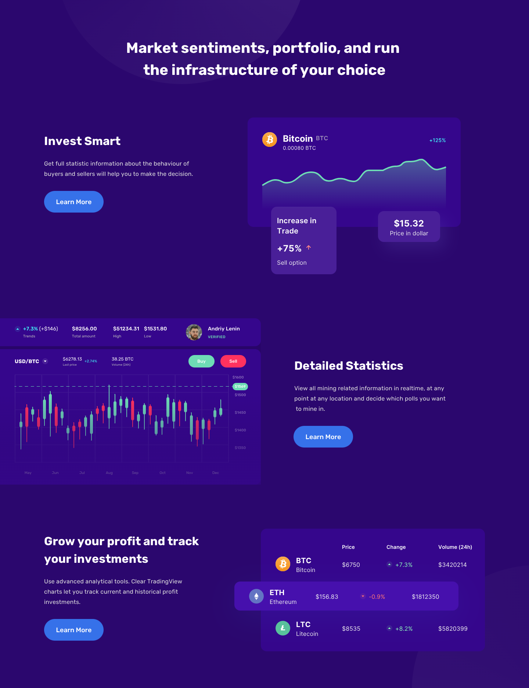
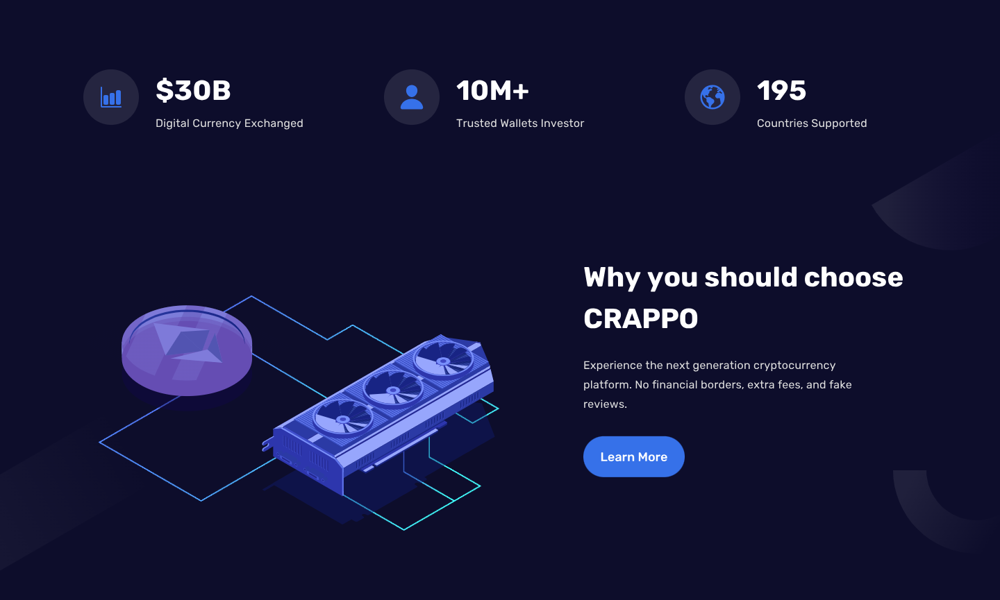
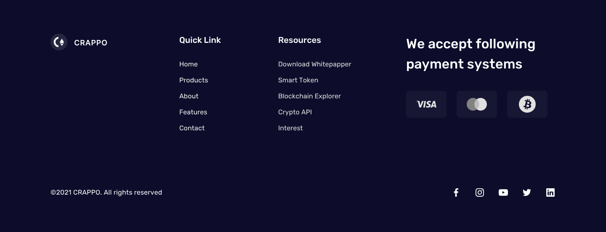

CRAPPO · 加密资产交易官网（PC 端）
这是一个交易平台的官网首页。访客大多从广告和社群进来，第一次听说这个名字，想问的只有三件事：靠谱吗、能做什么、怎么开始。所以整页只做三步——3 秒内说清「快、安全、可以投」，再用三段真实的数据界面证明平台里确实有东西可看，最后放一台算力计算器，让人在注册之前先算一遍自己一天能赚多少。PC 1440 单栏滚动，不展开二级页面。
主视觉

项目背景
交易平台官网 · 从「什么都说」到「只说三步」
CRAPPO 是一个加密货币交易平台。旧版首页把导航、活动横幅、三个卖点、图表、注册表单全挤在前两屏：滚动下去没有节奏，也没有一句话能让人记住；首次来访的人看完最大的感受是「信息很多」，但说不出这个平台比别家快在哪。
重做只保留一条纵向叙事：首屏讲「最快最安全」，第二段用三块真实的数据界面（涨幅卡、K 线、币价表）证明平台里有东西可看，第三段给算力计算器让人自己算一遍收益，第四段回到三个数字做背书，最后一条蓝色订阅带收尾。全站 PC 1440 单栏，没有任何二级页面——官网只负责把人送到注册。
设计策略
底色换章 · 三段证据 · 唯一动作色
- 首屏只讲三件事：一句价值主张（Fastest & secure platform to invest in crypto，固定三行断行）、一条信任背书（trusted by 10M wallets, over $30 billion in transactions）、一个动作（Try for FREE）。文案占 5 栏、等距插画占 7 栏且允许出血到右边缘，两者之间留一栏空白，缩到 1280 也不会互相挤。
- 活动信息压成一枚小徽标：75% SAVE 白底黑字压在 For the Black Friday weekend 深色条上，只占标题上方 24px 的一行。比一条通栏 Banner 省一屏，也不抢主标题。
- 用底色分章，不用分割线：墨蓝 #0d0d2b 讲「平台」，深紫 #2b076e 讲「产品」，回到墨蓝讲「背书」，最后一条电光蓝带讲「订阅」。四段底色各不相同，滚动时一眼就知道换章了。
- 三段特性共用一套栅格跑三遍（文左图右 → 文右图左 → 文左图右），只换「证据」的性质：Invest Smart 给一张 BTC 涨幅卡（+125% 面积图 + 两张浮动小卡 +75% / $15.32），Detailed Statistics 给 ticker 行 + 蜡烛图 + BUY / SELL，Grow your profit 给三行币价表（BTC / ETH / LTC，ETH 那行高亮）。
- 计算器是页面里唯一的交互承诺：白卡跨在墨蓝与浅色的分界线上，左边输入算力、右边选 TH/s、一颗 Calculate，下面直接给 ESTIMATED 24 HOUR REVENUE 0.055 130 59 ETH（$1275），再补一行免责小字。数字先给，注册在后。
- 币价卡三张里只高亮一张：Bitcoin 用深紫实心底 + Start mining 电光蓝胶囊，Ethereum 与 Litecoin 留白卡、只给一颗圆形箭头。一屏之内只有一个「现在就开始」。
- 页脚承担所有其余入口：Quick Link 五格、Resources 五项、支付方式三枚、©2021 与五个社交图标，一次性把「还能去哪」说完，正文里就不再重复这些链接。
首屏
3 秒讲完 · 标题固定三行

三段特性
同一套栅格 · 三种证据

算力计算器与币价
先给数字 · 再要注册
数字背书
三个数字 · 一张显卡插画

订阅带与页脚
一条蓝带 + 四列页脚

视觉语言
墨蓝底 · 深紫特性段 · 电光蓝动作 · 薄荷涨 · 玫红跌
底色只有一种：墨蓝 #0d0d2b，首屏与页脚都用它，全站没有第二块深色。深紫 #2b076e 单独留给「产品」那一段——它比墨蓝亮一档，三块数据界面压上去才有边界，又不像白色那样把长页面切成两半。电光蓝 #3671e9 是唯一的动作色：Register、Try for FREE、Calculate、Start mining、Subscribe 全用它，而且每屏最多一颗，用户扫一眼就知道该点哪里。薄荷绿 #6edcb5 与玫红 #ff325f 只承担「涨 / 跌」：+125%、+7.3%、-0.9%、K 线的红绿柱、BUY / SELL 两颗胶囊——离开数字它们就不再出现。文字只有白与三档灰（100% / 58% / 34%），层级靠字重（标题 800、正文 400）而不是靠颜色。形状上按钮一律胶囊 r999，卡片 16–24px，浏览器窗口 10px；插画只用等距渲染的硬币、显卡与冰块，全部同一套紫蓝，只在首屏、背书、订阅三处出现，其余位置一律平面。
遇到的问题与解决
4 个「单页官网」带来的取舍
问题深紫底上三块特性如果都做成「文左图右」，滚到第三屏就像同一段内容重复了三遍。
解决换图不换栅格：Invest Smart 给「一张涨幅卡 + 两张浮动小卡」（趋势），Detailed Statistics 给「ticker 行 + 蜡烛图 + BUY / SELL」（明细），Grow your profit 给「三行币价表」（对比）；文字侧只换标题与一句说明，连 Learn More 都保持同一颗。栅格一致让人不必重新学一遍，证据不同才不会读成重复。
问题首屏一句话加一张插画在 1440 上刚好，缩到 1280 的笔记本上标题就断成四行，按钮被挤到下一屏。
解决标题按最长的那一版定断行（Fastest & secure / platform to invest / in crypto），字号只留两档，不跟着视口无限放大；文案列锁 5 栏、上限 560px，插画列给 7 栏并允许出血到右边缘 60px；按钮与副文之间固定 32px，副文最多两行。宽度变化时只有插画被裁掉一点，文字部分不动。
问题计算器是一张白卡，压在深浅交界处时上半段在深色里、下半段在浅色里，把「算收益」和「买币」两段生生割开。
解决干脆让这张卡跨在分界线上，用一张卡把两段底色缝起来——上半段落在墨蓝、下半段落在浅色区；卡内只保留一条自上而下的信息流（输入算力 → 单位 → Calculate → 24 小时收益 → 免责小字），不做两栏，避免视线在卡里来回跳。
问题上线前走查才发现页脚 Resources 里「Download Whitepapper」拼错了，而这一列是白皮书、代币、区块浏览器、API 的唯一入口。
解决把 Resources 四条逐条与品牌方核对术语（Whitepaper / Smart Token / Blockchain Explorer / Crypto API），整理成唯一来源的文案表，页面所有链接都从这张表取；同时补齐 ©2021、支付方式三枚与五个社交图标，让「还能去哪」一次说完。
从设计到交付
3 步 · 从六个问题排到一套规范
-
1 · 结构 · 先把六段的顺序钉死
不画样式，先排出访客的六个问题：你是谁（首屏）、你能做什么（三段特性）、我能赚多少（计算器）、买什么（币价）、凭什么信你（三个数字）、下一步（订阅）。顺序定下来后，每一段只允许回答自己那一个问题，多的内容移到页脚。
-
2 · 版式 · 一套 12 栏跑完六段
用 1440 宽的 12 栏栅格把六段排完：文案 5 栏、界面 7 栏、段间距 160px、段内标题到正文 24px。三段特性来回镜像，计算器与背书段各自居中；所有界面都按 1440 原稿放，不做二次缩放，保证文字在交付稿里仍是可读的尺寸。
-
3 · 交付 · 规范、原稿与走查
交付六段设计稿（1440）+ 一套组件（导航、活动徽标、胶囊按钮、数据卡、ticker 行、币价表、输入框、页脚四列）+ 色彩与字号表；与开发逐项走查标题断行、插画出血压边、涨跌两色在深紫底上的对比度，以及页脚链接的文案表。
交付内容
这次做了什么